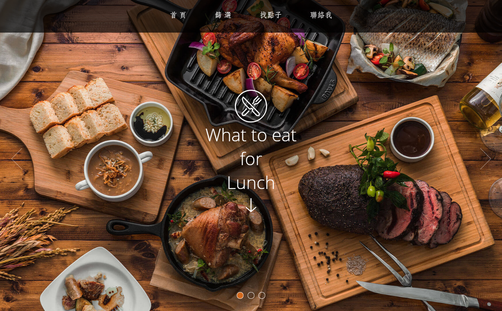

關於我
我是趙子潔，
畢業於淡江資訊傳播學系，
因緣際會下接觸網頁前端，
展開一場學習程式的旅程，
很喜歡打完程式看到成果的成就感，
雖然途中常常遭遇挫折，但也越挫越勇，
藉由解決困難來更充實自己。
技能
- 熟悉HTML5與CSS3語言
- 響應式RWD應用
- 基礎JavaScript知識
- 運用jQuery與CSS3做簡單動態
- Vue.js框架基本應用
- 運用ajax串接後端api
- 後端語言PHP與MySQL簡單應用
- 利用git進行版本控管
經歷
畢業製作： 《解靈人》
實習： 網路基因 技術部
學習： 創意數位媒體教學實習中心
社團： 淡江大學高雄校友會
大學： 淡江大學資訊傳播學系
作品

中午吃什麼
暑假在網路基因實習時做的一個小專案，也藉由架這個網站學到許多技巧，更磨練了自己的基本功。也在這個專案學了一點php，將店家資料存在資料庫，再利用ajax從資料庫讀取資料來呈現，並且做了一個後台來管理店家資料。
參觀網站
 國泰－高登計畫 首頁
在網基實習時，接觸到的一個真實專案，雖然並不是整個首頁都是我獨立完成，但能有機會參與案子的一部分，也讓我學到許多，包含與設計的溝通以及測試後的種種debug，都是一段很特別的經驗。
國泰－高登計畫 首頁
在網基實習時，接觸到的一個真實專案，雖然並不是整個首頁都是我獨立完成，但能有機會參與案子的一部分，也讓我學到許多，包含與設計的溝通以及測試後的種種debug，都是一段很特別的經驗。
參觀網站
國泰－高登計畫 首頁
在網基實習時，接觸到的一個真實專案，雖然並不是整個首頁都是我獨立完成，但能有機會參與案子的一部分，也讓我學到許多，包含與設計的溝通以及測試後的種種debug，都是一段很特別的經驗。
參觀網站
聯絡我
趙子潔
lube44011@gmail.com